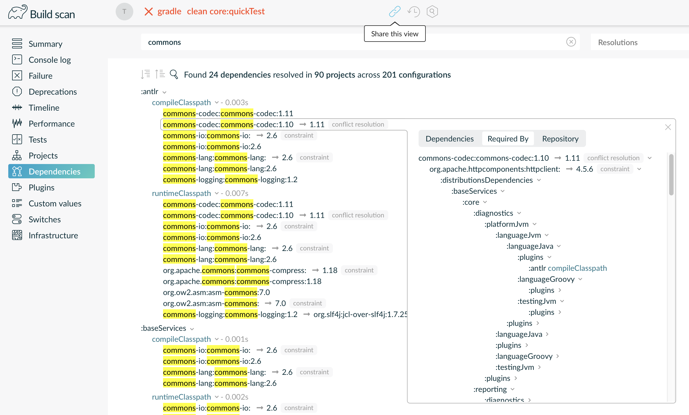
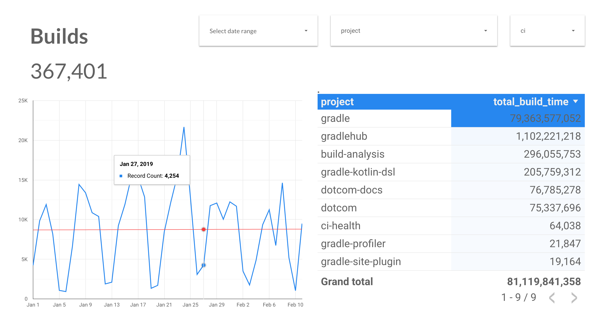

Maximizing Developer Productivity
with Gradle and Maven
Jenn Strater, Gradle @codeJENNerator
Who am I?
speaker {
name = "Jennifer 'Jenn' Strater"
currentHome = "Berlin, Germany"
nationality = 'USA'
company = "Gradle"
title = "Developer Advocate"
contributorTo = [
"Spring REST Docs",
"Codenarc",
"Apache Groovy Community",
"GR8DI"
]
twitter = "@codeJENNerator"
github = "jlstrater"
web = uri("https://www.jennstrater.com")
}Gradle
 |  |
Build automation | Development productivity |
Why is Developer Productivity important?
Long developer cycles → longer to get to production
More time waiting → less times to develop features
Context switching → more time to work on each feature
How are builds critical to Developer Productivity?
inefficient builds take longer to run
when build take too long there can be context switching
non-reproducable builds can cause problems at the least convenient times
Waiting
One extra minute per build destroys 4% of engineering capacity, on average.
Lost Time on Debugging

Debugging Time
On average, 20% of all builds fail because of code defects.
This easily adds up to 5-10% of engineering capacity.
Netflix has done internal studies that show that this consumes 20% of their engineering capacity.
How many builds are you running?
Gradle Team Example
Faster builds
How do we get faster?
How do we get faster?
What is slow?
Getting Started with Build Scans
Gradle
$> gradle build --scan
...
BUILD SUCCESSFUL in 5s
143 actionable tasks: 29 executed, 76 from cache, 38 up-to-date
Publishing build scan...
https://gradle.com/s/wnftgsuyjleyiGradle Build Scan Plugin
plugins {
id "com.gradle.build-scan" version "2.3"
}
buildScan {
server "https://gradle-enterprise.yourcompany.com"
publishAlways()
}Maven
(Register the Extension in .mvn/extensions.xml)
<extensions>
<extension>
<groupId>com.gradle</groupId>
<artifactId>gradle-enterprise-maven-extension</artifactId>
<version>1.1.4</version>
</extension>
</extensions>Maven
$> mvn clean verify
...
[INFO] ------------------------------------------------------------------------
[INFO] BUILD SUCCESS
[INFO] ------------------------------------------------------------------------
[INFO] Total time: 5.262 s
[INFO] Finished at: 2019-04-23T09:55:36+02:00
[INFO] ------------------------------------------------------------------------
[INFO] 13 goals, 8 executed, 5 from cache, saving at least 16s
[INFO]
[INFO] Publishing build scan...
[INFO] https://gradle.com/s/ypgljbvelzxzs
[INFO]Maven
«project»/.mvn/gradle-enterprise.xml
<gradleEnterprise>
<server>
<url>https://gradle-enterprise.yourcompany.com</url>
</server>
<buildScan>
<publish>ALWAYS</publish>
</buildScan>
</gradleEnterprise>Build Scans – Demo
How do we get faster?
More efficient use of resources
Don’t rebuild what hasn’t changed
Run builds efficiently
Fix failures faster
How do we get faster?
More efficient use of resources
Don’t rebuild what hasn’t changed
Run builds efficiently
Fix failures faster
Resource usage
Settings & Suggestions
Switches
Gradle | Maven |
Infrastructure
Gradle | Maven |
Resources
How do we get faster?
More efficient use of resources
Don’t rebuild what hasn’t changed
Run builds efficiently
Fix failures faster
Incremental Builds


How does the Build Cache work?
The cacheKey for Tasks/Goals is based on the Inputs:
cacheKey(javaCompile) = hash(sourceFiles, …)The cacheEntry contains the output:
cacheEntry[cacheKey(javaCompile)] = fileTree(classFiles)
Build Cache for Gradle (single run)
$> gradle --build-cache assemble
:compileJava FROM-CACHE
:processResources
:classes
:jar
:assemble
BUILD SUCCESSFULBuild Cache for Gradle (all)
Set org.gradle.caching=true in gradle.properties
Build Cache for Gradle
By default in Java, Groovy, Scala, C++ und Swift
Supports tasks such as Compile, Javadoc, Test und Verification
Build Cache for Maven
Requires the Gradle Enterprise Maven Extension
Only supported for clean builds
Initial Release: March 2019
Supported Plugins: Java Compiler, Surefire/Failsafe, Javadoc, JAXB, Checkstyle, and more!
Build Cache – Demo
Storing
Cache Hit
Local and Remote Cache
Local and Remote Cache
Local and Remote Cache
Local and Remote Cache
Local and Remote Cache
Local and Remote Cache
Local and Remote Cache
Local and Remote Cache

Local and Remote Cache
Remote cache configuration (Gradle)
settings.gradle
buildCache {
remote(HttpBuildCache) {
url = 'https://gradle-enterprise.yourcompany.com/cache/'
}
}Conditional cache configuration (Gradle)
settings.gradle
def ciServer = System.getenv().containsKey('CI')
buildCache {
local {
enabled = !ciServer
}
remote(HttpBuildCache) {
url = 'https://gradle-enterprise.yourcompany.com/cache/'
push = ciServer
}
}Remote cache configuration (Maven)
<gradleEnterprise>
<server>
<url>https://gradle-enterprise.yourcompany.com</url>
</server>
</gradleEnterprise>Per project: «project»/.mvn/gradle-enterprise.xml
Per user: ~/.m2/gradle-enterprise.xml.
Conditional cache configuration (Maven)
<gradleEnterprise>
<server>
<url>https://gradle-enterprise.yourcompany.com</url>
</server>
<buildCache>
<remote>
<storeEnabled>false</enabled>
</remote>
</buildCache>
</gradleEnterprise>./mvnw clean assemble -Dgradle.cache.remote.storeEnabled=true

Cache Administration
Cache Administration
Pause
How do we get faster?
More efficient use of resources
Don’t rebuild what hasn’t changed
Run builds efficiently
Fix failures faster
Learn the build tools
Gradle

Behavioral changes
Gradle users should stop running clean!
Yes, even for CI.
Only run the tasks you need.
Use dependency caching.
Fail tests as soon as possible
test {
failFast = true
}gradle integTest --fail-fastDependency Conflicts

Use Gradle ;)
How do we get faster?
More efficient use of resources
Don’t rebuild what hasn’t changed
Run builds efficiently
Fix failures faster
Extending build scans
Extending build scans (Gradle)
build.gradle
def ciServer = System.getenv().containsKey('CI')
buildScan {
tag(ciServer ? "CI" : "local")
value("buildNumber", 2)
link("CI Build", "http://ci-server/build/2")
}Or via system properties:
./gradlew build -Dscan.tag.CI
Extending build scans (Maven)
pom.xml
<plugins>
<plugin>
<groupId>org.gradle</groupId>
<artifactId>gradle-enterprise-maven-extension</artifactId>
<version>1.1.4</version>
<configuration>
<gradleEnterprise>
<buildScan>
<tags><tag>CI</tag></tags>
<links><link><name>CI Build<name><url>http://ci-server/build/2</url></link></links>
<values><value><name>buildNumber<name><value>2</value></value></values>
</buildScan>
</gradleEnterprise>
</configuration>
<plugin>
</plugins>Or via system properties:
./mvnw package -Dscan.tag.CI
Extending build scans (Maven)
Complex logic can be implemented as a Groovy script
<plugin>
<groupId>org.codehaus.gmavenplus</groupId>
<artifactId>gmavenplus-plugin</artifactId>
<version>1.6.2</version>
<executions>
<execution>
<id>build-scan-user-data</id>
<phase>validate</phase>
<goals>
<goal>execute</goal>
</goals>
</execution>
</executions>
...Extending build scans (Maven)
<configuration>
<scripts>
<script>file:///${project.basedir}/buildScanUserData.groovy</script>
</scripts>
</configuration>
<dependencies>
<dependency>
<groupId>org.codehaus.groovy</groupId>
<artifactId>groovy-all</artifactId>
<version>2.5.6</version>
<type>pom</type>
<scope>runtime</scope>
</dependency>
</dependencies>
</plugin>Extending build scans (Maven)
buildScanUserData.groovy
def buildScan =
session.lookup("com.gradle.maven.extension.api.scan.BuildScanApi")
def ci = System.getenv('CI')
if (ci) {
buildScan.tag('CI')
} else {
buildScan.tag('Local')
}Collaboration through Deep Linking
Build Comparison
Compare two builds
Input volatility
Inputs need to be stable and portable
Common problems:
Timestamps
Absolute file paths
Non-deterministic ordering
Volatile inputs
Runtime classpath normalization
Inconsequential & volatile files on runtime classpaths can be ignored.
More cache hits and faster builds.
Runtime classpath normalization
Inconsequential & volatile files on runtime classpaths can be ignored.
More cache hits and faster builds.
Runtime classpath normalization (Gradle)
build.gradle
normalization {
runtimeClasspath {
ignore 'build-info.properties'
}
}Runtime classpath normalization (Maven)
pom.xml
<plugin>
<groupId>com.gradle</groupId>
<artifactId>gradle-enterprise-maven-extension</artifactId>
<version>1.1.4</version>
<configuration>
<gradleEnterprise>
<normalization>
<runtimeClassPath>
<ignoredFiles>
<ignoredFile>META-INF/build.properties</ignoredFile>
</ignoredFiles>
</runtimeClassPath>
</normalization>
</gradleEnterprise>
</configuration>
</plugin>Gradle is a Data Platform

Performance Dashboard
Trends Dashboard
Do your own build data analysis
Gradle Enterprise exposes build scan data for real time consumption via API
Export API Example



Roadmap
Test acceleration via remote test execution
More build analytics, including flakey tests insights
More Gradle dependency insights, feature parity with command line
Deeper Maven insights, console log, tests, dependencies, comparisons
Trial
Request a free 30-day trial at https://gradle.com/enterprise/trial.
Resources
Free Trainings at gradle.com/training:
Introduction to Gradle
Build Cache Deep Dive
Maven + Gradle Enterprise
Gradle Build Tool Docs: https://docs.gradle.org
Gradle Enterprise Docs & Tutorials: https://docs.gradle.com
Free build scans for Maven & Gradle: https://scans.gradle.com
Gradle Newsletter: https://newsletter.gradle.com
Conclusion
Measure your builds!
Analyze the data for both local and CI builds.
Improve build processes using build automation tooling.
Optimize builds with incrementalization and/or parallelization.
Iterate to maintain build happiness.